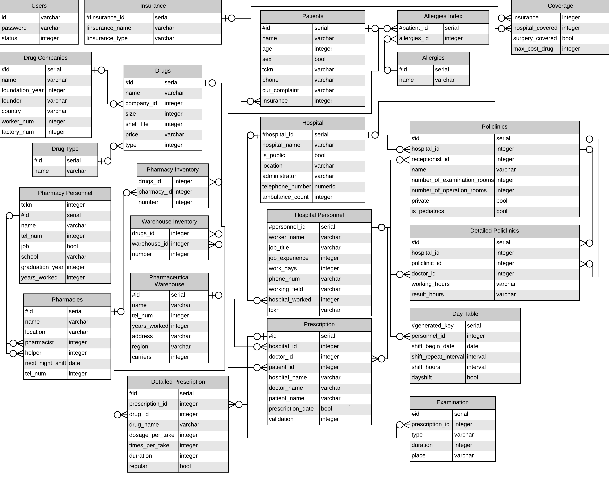

Developer Guide¶
{kind=link}
The open source database management system used in this project is PostgreSQL. It is a DBMS with a diverse community which helps a lot in development phase. It also supports ACID (Atomicity, Consistency, Isolation, Durability). It supports multiple indexing techniques such as GIN (Generalized Inverted Index) or GiST (Generealized Search Tree).
{kind=link}
Database Initialization for HEROKU
Since we are using HEROKU for deployment, we need to set the database up accordingly. The code block below descripes how our system is initialized. DATABASE_URL is inside the Heroku server and it is generated automatically by Heroku.
All of the table creations are carried out inside initialize function.*INIT_STATEMENTS* are SQL queries for table creation.
def initialize(url):
with dbapi2.connect(url) as connection:
cursor = connection.cursor()
for statement in INIT_STATEMENTS:
cursor.execute(statement)
cursor.close()
if __name__ == "__main__":
url = os.getenv("DATABASE_URL")
if url is None:
print("Usage: DATABASE_URL=url python dbinit.py", file=sys.stderr)
sys.exit(1)
initialize(url)
Database Initialization for LOCAL development
For local development and debugging purposes, the DATABASE_URL should be given. It should contain some keywords in order to be used. For our specific database we can initialize as follows:
def initialize(url):
with dbapi2.connect(url) as connection:
cursor = connection.cursor()
for statement in INIT_STATEMENTS:
cursor.execute(statement)
cursor.close()
url = "dbname='<dbname>' user='<user>' host='<host>' password='<password>'"
initialize(url)
Also, this can be achieved without changing the whole code’s structure via changing a boolean in our server.py file, line 13.
If *DEBUG is true, you can run the database locally. If *DEBUG is false,you can run the database on HEROKU.
DEBUG = False
if(DEBUG == False):
url = os.getenv("DATABASE_URL")
else:
url = "dbname='<dbname>' user='<user>' host='<host>' password='<password>'"
initialize(url)
Sample Database Query
Let’s imagine a scenario where the user wants to see everything from SAMPLE_TABLE with a given ID number. A typical SQL query can be accomplished via the snippet below.
result = []
connection = db.connect(url)
cursor = connection.cursor()
statement = "SELECT * FROM SAMPLE_TABLE WHERE ID={}".format(id)
cursor.execute(statement)
connection.commit()
for row in cursor:
result.append(row)
cursor.close()
At the end of the execution, if successful, result list will be populated with the set of rows that satisfy the given query.
Note
For string values, SQL statements need to be in single quotes (Eg. … WHERE NAME=’Foo’). You can achive this by using ‘ escape characters in format
name = 'Foo'
statement = "... WHERE NAME = \'{}\'".format(name)